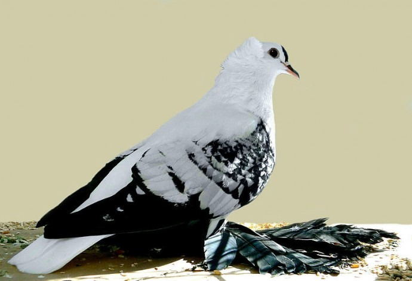

Birds.Domestic Birds.Pigeon

Definition
Birds-a class of vertebrates, whose representatives are well characterized by the fact that their body is covered
feathers and forelimbs are modified into organs of flight - wings. With rare exceptions, birds are flying animals,
and those species that do not fly have underdeveloped wings.
Pigeons – relatively small birds, which, unlike many other domestic birds, have retained the ability
to fly. The body length on average reaches 40 cm, the wingspan is from 50 to 70 cm, the weight is from 250 to 400 g.
The color of the plumage is very variable and differs in different breeds, but the feathers are always dense and dense.
The body of the pigeon is oblong, the wings are wide with sharp tips. The tail is short with a rounded edge.
Legs are short, usually without feathering. The beak is medium in size, dark.
Interesting facts about pigeons:
Homing pigeons are among the fastest birds and can accelerate up to 80 km / h, and even common breeds fly at speeds up to 60 km / h.
Pigeons freely rise to a height of 1 to 3 km. Birds can find their nest at a distance of more than 1000 km, although they
are not migratory species and are sedentary. On the ground, pigeons are guided by the sun, magnetic field and smells.
Pigeons are able to hear infrasound with a frequency of up to 10 Hz, due to which they sense a thunderstorm and
an approaching earthquake in advance.